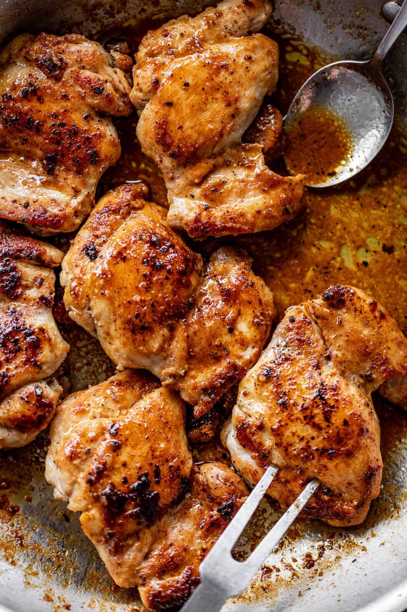

Crispy chicken thighs

Description
Following this recipe will ensure that you recieve perfect chicken thighs everytime you cook them!
Ingredients
- Bonesless, skinless chicken thighs
- Knorr's chicken seasoning
- Chicken magic seasoining
- Garlic powder
- Olive oil
Directions
- Put oil on medium-high heat and add olive oil
- While the oil heats up, trim the fat off the chicken thighs
- Spread the seasoning on the trimmed chicken thighs
- Lay the chicken thighs in the pan. (Make sure to lay them away from you so the oil doesn't splash on you)
- Let cook on each side for 2-3 minutes and then allow them to cool in a container with napkins for 3 minutes
- Enjoy! Goes perfectly on top of pasta, or serves as the main dish when paired with some green beans and potatos